The Four Stages of a Project, Explained
Every client asks some version of the same question at the start: what actually happens once we sign on? It's a fair thing to wonder. Interior design can feel opaque from the outside, a mix of mood boards, trade names and timelines that only make sense once you're in the middle of it.
At The Style Workshop, every project, whether it's a single room refresh or a full home renovation, moves through the same four stages. The scale changes, the detail changes, but the structure doesn't. Knowing what to expect at each point makes the whole process feel less like a leap of faith and more like a considered plan.
Here's what actually happens, stage by stage.
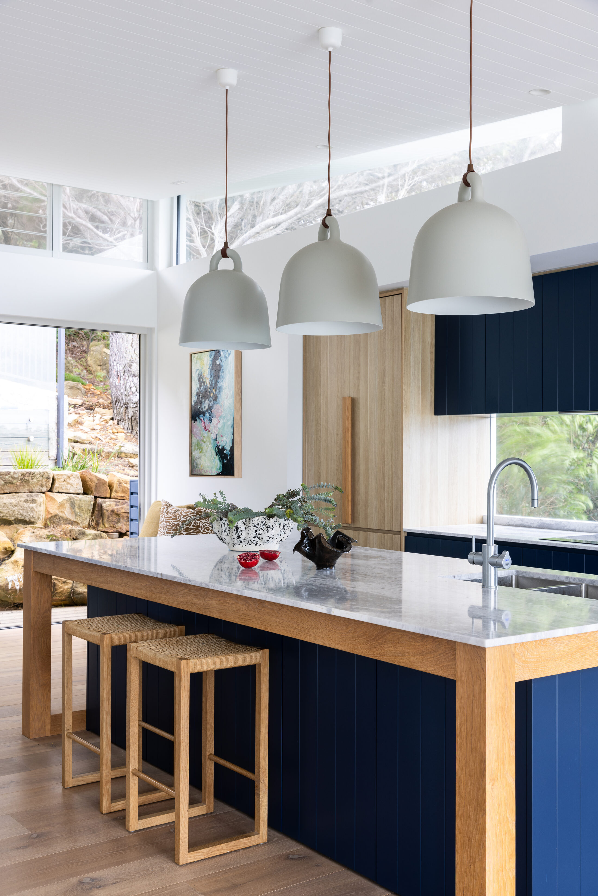
The finished kitchen at our Whale Beach Project, concepts below brought to life. Photography - Simon Whitbread.
Stage One, Discovery
It starts with a conversation, not a site visit. We offer a free discovery call first, a short chat to make sure we're aligned on scope, style and budget before committing to anything further. From there, we'll ask you to complete a questionnaire ahead of our visit, so we arrive already armed with information rather than starting from scratch on the day.
Then we meet in your home. A Discovery visit is where we walk the space together, talk through how you actually live in it, and get a clear read on what's working and what isn't. This is less about Pinterest boards at this point and more about function: how the light moves through a room, where the furniture needs to earn its keep, what's non-negotiable for the family and what's open to change.
We're also listening for the things clients don't always think to mention, the shoe pile that never has a home, the dining table that's really a homework desk, the guest room nobody wants to admit is a dumping ground. These details shape the brief as much as any style preference does.
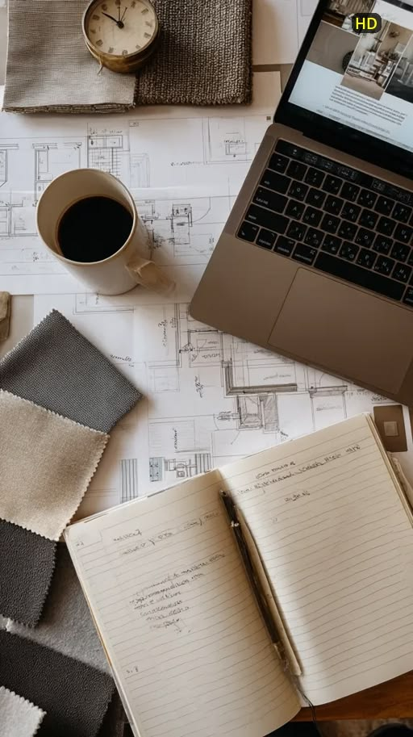
Reviewing the questionnaire and early plans before the site visit.
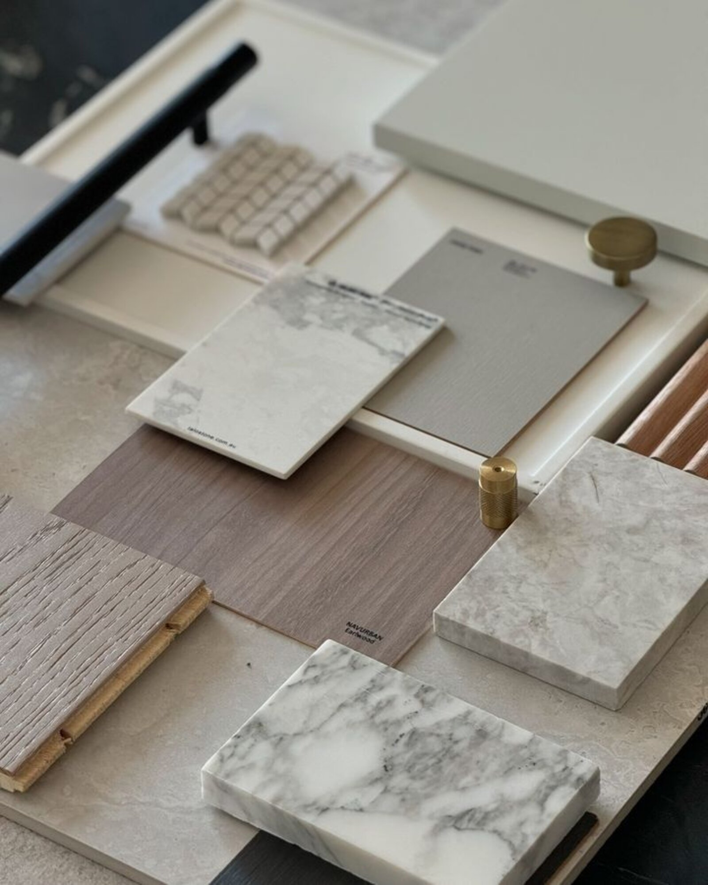
Working through material options against the existing floor plan, on site.
Following the visit, we send you a summary of what we've discussed and our understanding of the brief, along with some visuals. By the end of Discovery, we have a clear direction: the scope, the priorities, and a shared understanding of what a successful outcome looks like for you.
Stage Two, Concept Design
This is where the vision starts to take shape. We develop the spatial layout, the material and colour palette, and the overall design concept for the space, and bring it all together in a presentation that lets you see the direction before a single item is purchased.
It's a considered process rather than a quick moodboard. We're thinking about how materials sit together in real light, how a palette will age over ten years and not just ten months, and how each room connects to the ones around it. The goal is a concept that feels inevitable once you see it, even though it took real work to get there.
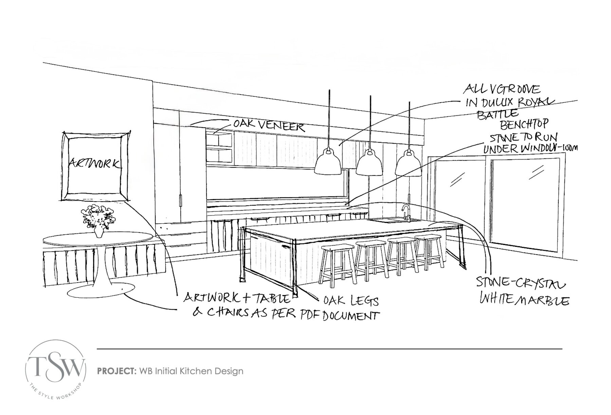
The initial concept sketch, annotated with joinery, benchtop and finish notes.
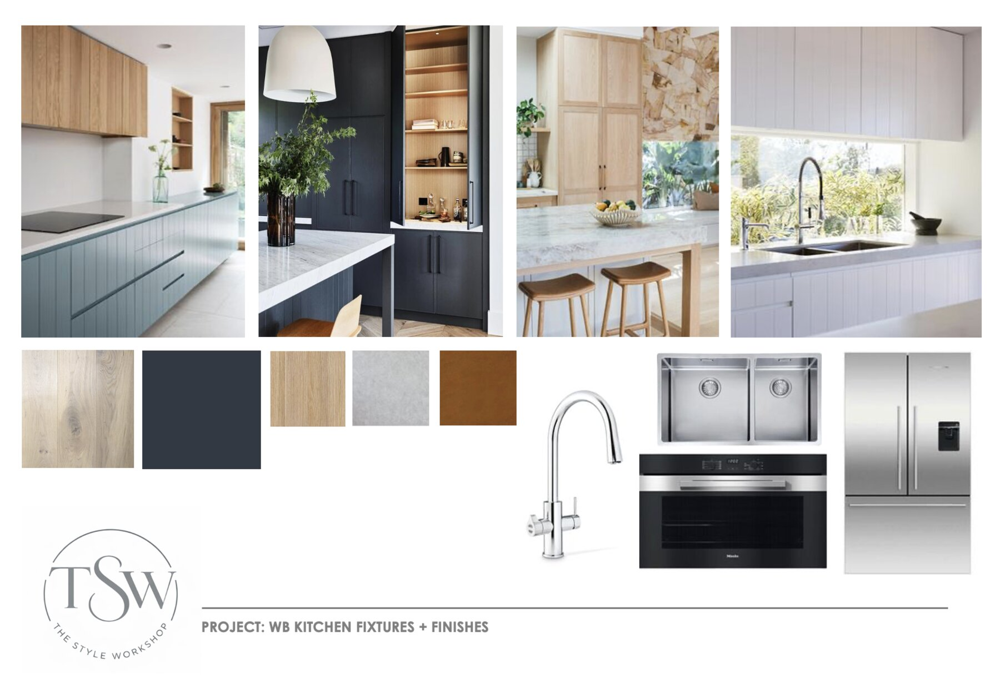
Fixtures and finishes, brought together with reference imagery and samples.
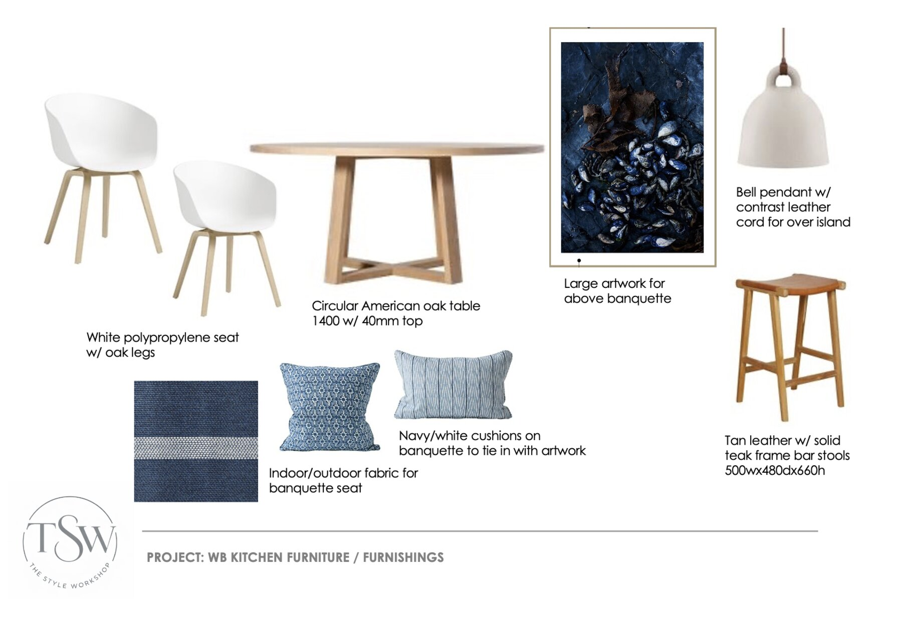
Furniture and furnishings, selected to complete the concept.
Stage Three, Refinement
No concept is finished on the first pass, and it shouldn't be. Refinement is where your feedback shapes the final direction: adjusting a finish, reconsidering a layout, swapping a fabric that read differently on screen than it does in hand. This stage exists because the best results come from genuine collaboration, not from a designer working in isolation.
Once everything is signed off, we finalise specifications, drawings and selections so the project is ready to move into procurement with nothing left ambiguous.
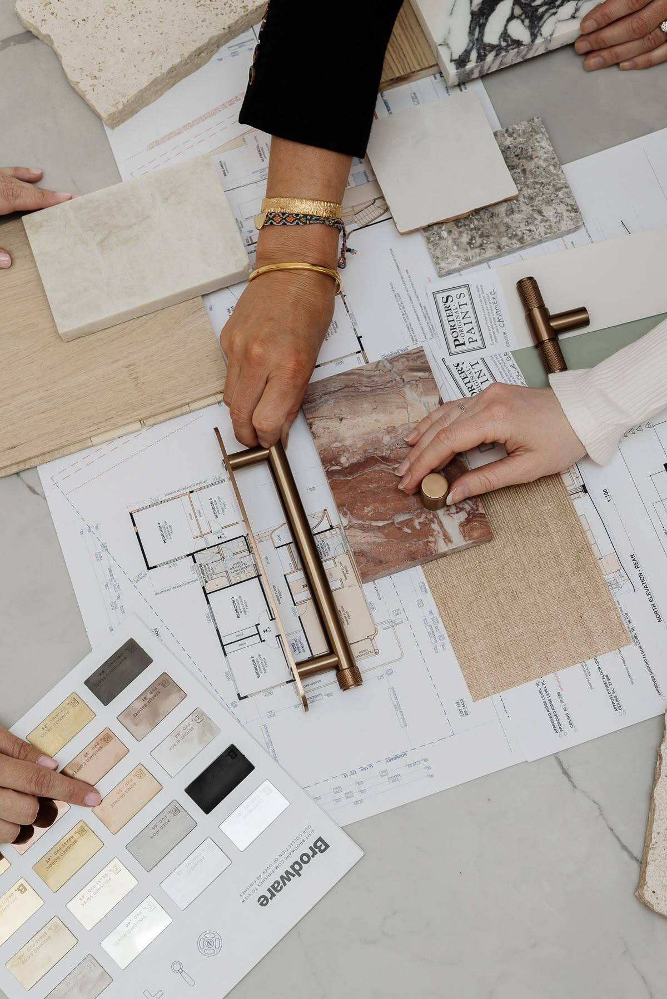
Working through hardware and finish options together, against the plan.
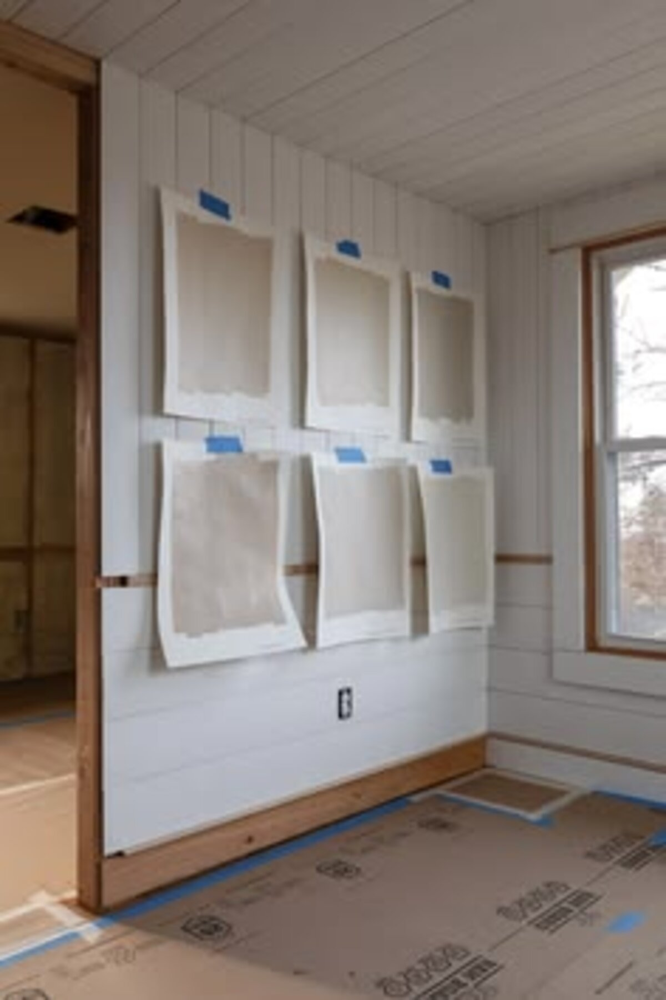
Paint drops taped up on site, assessed in the space itself.
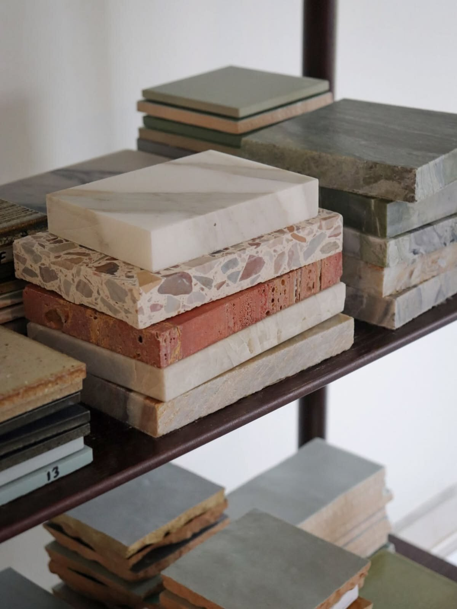
Narrowing down stone and tile options from the studio library.
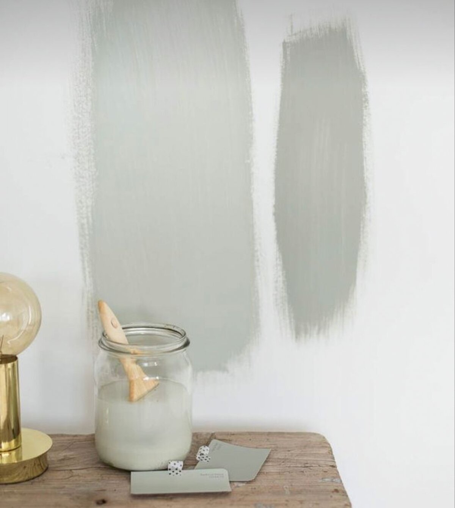
Colour tested directly on the wall before anything is finalised.
Stage Four, Delivery and Support
The final stage is where the concept becomes a finished space. We coordinate procurement and manage the trades and suppliers involved, keeping the many moving parts, joinery, upholstery, lighting, artwork, on track and on schedule. Then comes styling: the layer of finishing touches that makes a house feel resolved rather than simply furnished.
This is usually the stage clients enjoy most, watching a space they've lived with as drawings and samples finally come together in person.
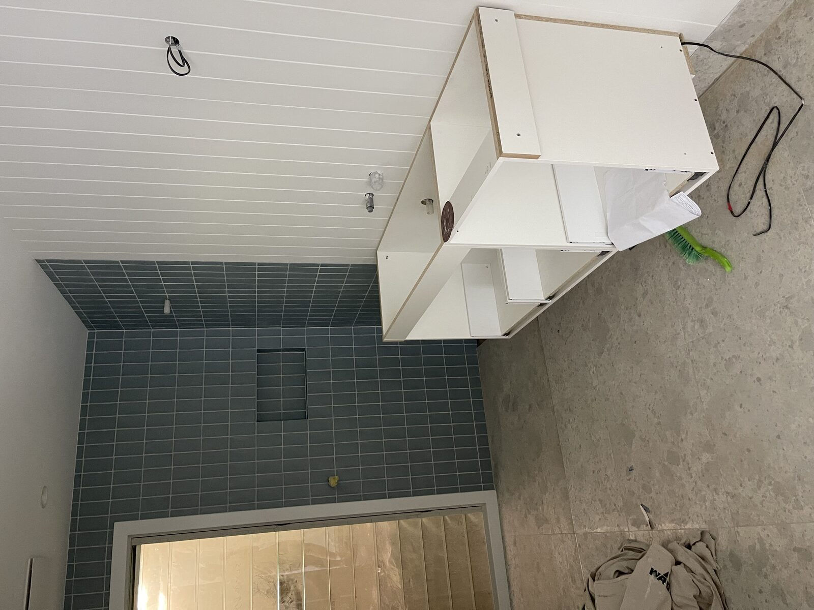
Our Whale Beach bathroom project mid-build, tiling complete and joinery in progress.
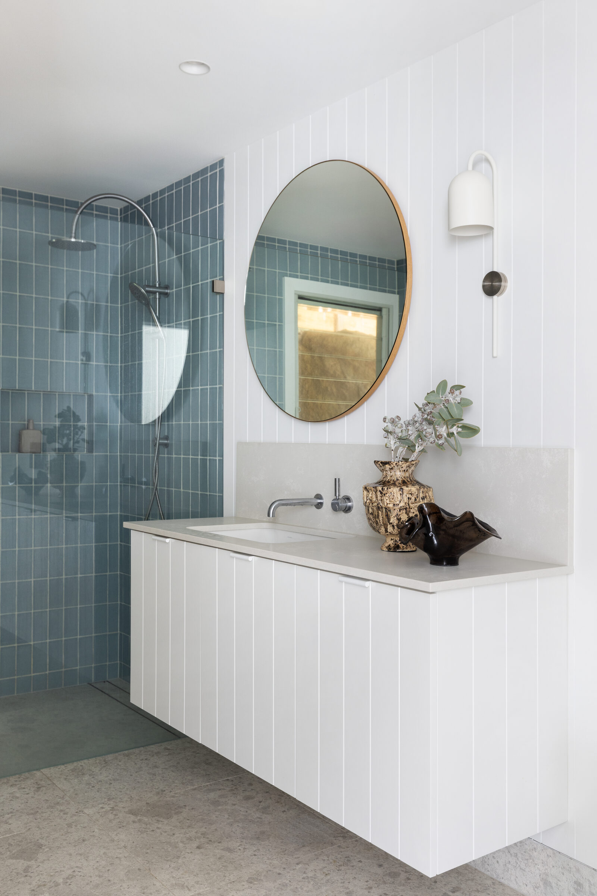
The same bathroom, finished, styled and ready to be lived in. Photography - Simon Whitbread.
Four stages, one considered process, and a result that feels entirely yours. If you're weighing up whether now is the right time to start, the first step is simply a conversation.

Ready to start your own project?
Every project begins with a conversation. Book a complimentary discovery call to talk through your space, your brief and where to start.
Book a Consultation